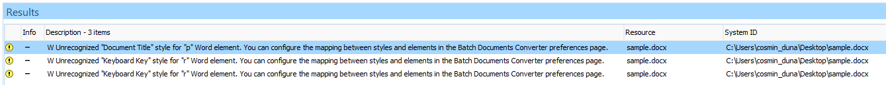
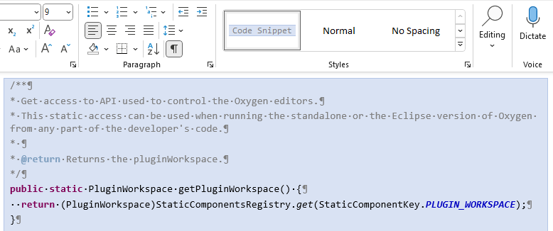

Word to DITA Conversion FAQ
How can I fix unrecognized style warnings?
When converting a Word document, the styles that don't have a mapping in the Word styles mapping table from the preferences page are converted to simple paragraph elements and a warning is reported for each of them in the Results view.

- Open the Plugins / Batch Documents Converter preferences page in Oxygen.
- To fix the
Unrecognized "Document Title" style for "p" Word elementwarning, add a new row in the Word styles mapping table with the following cells:- Type "p" in the Word element cell (because the unrecognized style was found on a Word paragraph).
- Type "Document Title" in the Word style cell.
- In the "HTML elements" cell, you need to add a corresponding HTML element. For
this example, a corresponding element is "
<h1>" for the default mapping of the "Title" style. So, type "h1:fresh" into this cell. The ":fresh" suffix instructs the converter to create a new element every time it finds this kind of paragraph. When it's not set, the converter will try to reuse the elements and combine sequences of the same style of paragraphs into a single element.
- To fix the
Unrecognized "Keyboard Key" style for "r" Word elementwarning, add a new row in the Word styles mapping table with the following cells:- Type "r" in the Word element cell (because the unrecognized style was found on a Word character).
- Type "Keyboard Key" in the Word style cell.
- In the HTML elements cell, you need to add a
corresponding HTML element. For this example, a corresponding element is
"
<kbd>" for the default mapping of the "HTML Keyboard" style. So, type "kbd" in this cell.
| p | Document Title | h1:fresh |
| r | Keyboard Key | kbd |
For more information about the Word styles mapping configuration, see the following section from the documentation: Conversions from Word.
How can I configure the styles mapping when the wanted element doesn't exist in HTML?
A frequent case when setting the mapping configuration for a custom style is to not find a correspondent element in HTML, although one exists in DITA.
As an example, suppose I have a Word document that contains a character custom style named "filepath". We know that a correspondent element exists in DITA, but we cannot find one in HTML.
These are the steps that can be applied to handle this case:
- Go to the Plugins / Batch Documents Converter preferences page
and add the following mapping in the Word styles mapping
table:
r Filepath i.filepath - Convert the Word document to DITA. The characters styled with the Filepath
style in Word are converted to the
<i>element with the "filepath"@outputclassattribute. - Move the output files to your project, select them, and apply the "Rename
element" refactoring operation using the "//i[@outputclass = 'filepath']"
XPath for matching the target
<i>element and changing them to the<filepath>DITA element. - Apply the "Remove attribute" refactoring operation using the
"//filepath[@outputclass = 'filepath']" XPath for matching the
target elements and deleting the
@outputclassattributes.
Instead of steps 3 and 4, you can also create a custom refactoring operation that makes these two changes, like this:
- Create an XSLT file (for example, named
batch-converter-post-processing.xsl) that iterates over all
elements from the document, finds the
<i>elements with the "filepath"@outputclassattribute, and replaces them with the<filepath>elements without copying the@outputclassattribute:<?xml version="1.0" encoding="UTF-8"?> <xsl:stylesheet xmlns:xsl="http://www.w3.org/1999/XSL/Transform" xmlns:xs="http://www.w3.org/2001/XMLSchema" exclude-result-prefixes="xs" version="2.0"> <xsl:template match="@* | node()"> <xsl:copy> <xsl:apply-templates select="@* | node()"/> </xsl:copy> </xsl:template> <xsl:template match="i[@outputclass = 'filepath']"> <xsl:element name="filepath"> <xsl:apply-templates select="node()"/> </xsl:element> </xsl:template> </xsl:stylesheet> - Create an XML Refactoring operation descriptor (for example, named
batch-converter-post-processing.xml) that references the
stylesheet and provides
descriptions:
<?xml version="1.0" encoding="UTF-8"?> <refactoringOperationDescriptor xmlns:xsi="http://www.w3.org/2001/XMLSchema-instance" xmlns="http://www.oxygenxml.com/ns/xmlRefactoring" id="op_qzq_y2x_nsb" name="Post-processing Batch Documents Converter"> <description>Post-process the resulting DITA documents from the Word conversion using the Batch Documents Converter add-on.</description> <script type="XSLT" href="batch-converter-post-processing.xsl"/> </refactoringOperationDescriptor> - Copy these two files to a folder scanned by Oxygen XML Editor when it loads the custom operation.
- Apply the new custom operation named "Post-processing Batch Documents Converter" that can now be found in the list of refactoring operations from the "XML Refactoring" dialog box.
How can I configure the styles mapping for paragraphs styled as code blocks?

To add a mapping for this custom style, follow these steps:
- Open the Options → Preferences → Plugins → Batch Documents Converter preferences page in Oxygen.
- Add a new row to the Word styles mapping table.
- Enter "p" in the Word element cell, and enter "Code Snippet" in the Word style cell to match the paragraphs styled with "Code Snippet".
- Enter "pre:separator('\n')" in the HTML elements cell.
The
<pre>element is the corresponding HTML element for these types of paragraphs. Since we want to merge these sequences of "Code Snippet" style paragraphs, the ":fresh" marker was not used. The ":separator('')" syntax configures a separator when the same type of consecutive paragraphs are merged. If it isn't specified, we would obtain a<pre>element with a single line of text.
Using this configuration, a <pre> element is the result in
the converted DITA output for every code block sequence. For obtaining
<codeblock> elements in DITA, see How can I configure the styles mapping when the wanted element doesn't exist in HTML? for setting a class attribute on the resulting <pre> HTML
element (by setting "pre.codeblock:separator('\n')" in the HTML
elements cell) and creating a custom refactoring operation.
How can I preserve the Word shapes?
- Select the shape.
- Invoke the Cut action from the contextual menu.
- Invoke the Paste Special... action from the menu.
- In the resulting dialog box, select Picture (SVG) and OK.
After completing these steps, the document will contain "SVG" images that will be preserved in the HTML or DITA results.